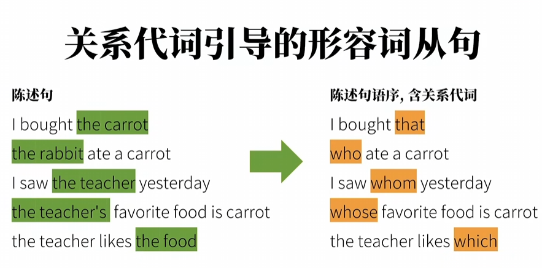
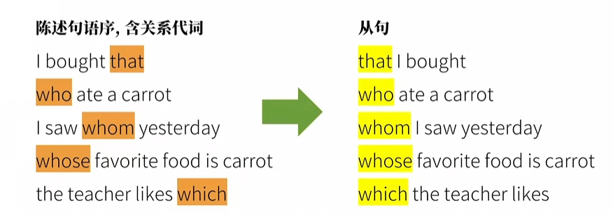
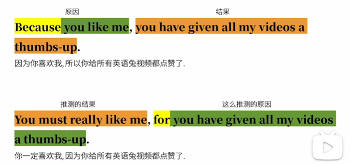

版权信息
warning
本文章为博主原创文章。遵循 CC 4.0 BY-SA 版权协议，转载请附上原文出处链接和本声明。
***课程来自B站up英语兔——英语语法精讲合集 (全面, 通俗, 有趣 | 从零打造系统语法体系)，质量非常高的up，墙裂推荐。但博客也加入了我自己的理解 ***
最近一直在忙项目和实习，现在才抽空继续补课英语。。。
1. 定语从句（形容词从句）
在中文中，一个复杂的定语通常是前置的，
比如“啊啊啊啊啊啊宝宝你是一个香香软软甜甜糯糯蜂蜜奶油甜甜腻腻酥酥脆脆滑滑嫩嫩绵绵密密弹弹润润丝丝滑滑蓬蓬松松香香甜甜油油润润细细软软密密实实润润甜甜酥酥软软嫩嫩滑滑松松软软甜甜蜜蜜细细绵绵香香浓浓弹弹嫩嫩香香甜甜酸酸甜甜辣辣爽爽咸咸鲜鲜苦苦甘甘滑滑嫩嫩酥酥脆脆软软绵绵弹弹润润油油腻腻清清爽爽浓浓醇醇淡淡幽幽热热乎乎冰冰凉凉黏黏糊糊爽爽脆脆鲜鲜嫩嫩辣辣麻苦苦辣辣酱油醋橄榄油菜籽油葵花籽油鱼虾蟹龙虾贝类牛肉羊肉猪肉鸡肉鸭肉鹅肉火鸡肉香肠火腿培根肉丸汉堡热狗披萨寿司拉面咖喱炖肉烤肉烤鱼烤鸡沙拉汤粥芒果柠檬柚子百香果茼蒿芥蓝芹菜荠菜苋菜意式烤蔬菜配香草酱和橄榄油鲜美多汁香脆可口滑嫩浓郁醇厚甘甜爽口香辣酸甜苦辣咸香酥软糯滑爽劲道鲜美清香扑鼻诱人色泽鲜艳香气扑鼻口感丰富层次分明风味独特香气四溢回味无穷色香味俱佳口感细腻肉质鲜嫩色泽金黄外酥里嫩香气浓郁味道鲜美口感滑嫩味道醇厚味道独特风味独特香气诱人口感鲜美味道浓郁口感丰富味道鲜美味道醇厚味道独特香气扑鼻口感细腻肉质鲜嫩色泽金黄外酥里嫩香气浓郁味道鲜美口感滑嫩味道醇厚味道独特风味独特香气诱人口感鲜美味道浓郁口感丰富味道鲜美味道醇厚味道独特香气扑鼻的小蛋糕”
而在英文中，一个复杂的定语通常是后置的，并用关系词连接起来，以确认定语的归属。
由于被修饰的主体对象先于定语出现，因此主体对象也叫先行词——“定语未至，主体先行”
The apple which is on the table is mine.
实际上，采用后置定语的方式，可以让信息接收者在一开始就知道描述对象信息（主要信息），再接收描述对象的限定信息（次要信息）。而采用前置定语的方式，信息接收者先接收次要的限定信息，再接收主要的描述对象信息。我们无意讨论哪种方式更好，只是说明区别。
1.1. 关系词
关系词有关系代词：
who whose whom which that


还有关系副词：
why where when
实际上，关系副词 = 介词 + which
why = for which
where = at which
when = on which
This is the reason why I slept.
This is the reason for which I slept.
关系副词在从句的陈述句语序中不作句子成分，关系代词那样在从句的陈述句语序中作成分。
1.2. 对比：that|which
主要辨析修饰物时的用法。
that 有明确的指向性，有“就是那个”的意味。
which 指向不明确，有“筛选某一个”的意味。因此当先行词被最高级修饰、被序数词修饰，只能用 that。因为用这些词修饰先行词时，先行词是唯一的，不存在“其中的一个”。
而先行词既有人又有物时，为了避免顾此失彼，也用 that。
This movie is the only one that can make me cry.
The movie which moved me to tears is truly excellent.
修饰人时，不受以上规则影响：
You are the only one who can make me cry.
1.3. 非限制性和限制性
限制性（不用逗号隔开）：信息是致命的、决定性的。
- The apple which is on the table is mine.（桌子上的那个苹果是我的。言下之意：别的地方的苹果不是我的。定语从句用于锁定/筛选目标。）
非限制性（用逗号隔开）：信息是补充的、锦上添花的，即使去掉也不影响。
- The sun, which is a star, gives us light and heat. （太阳给我们光和热。不管加不加“它是一颗恒星”这个从句，大家都知道太阳是哪个。定语从句仅用于补充信息。）
再对比下面这些句子：
I have a head which is round.——我有好几个脑袋，我指代的是圆的那颗。
I have a head,which is round.——我只有一个脑袋，并强调它是圆的。
在非限制性定语从句中（有逗号），不用 that。因为 that 在英语发音和语气中具有强烈的“指向性”和“限制感”，与非限制性从句“闲聊补充”的语境相冲突。
需要注意的是，非限定性形容词从句还可以修饰限定整个句子，例如
I am handsome, which is not surprising.
这里修饰的是“I am handsome”整体。
2. 名词性从句
名词性从句，顾名思义，从句在句子中充当名词属性，名词在句子中能作什么成分，从句就能作什么成分。
在英语中，名词性从句需要一个引导词来宣誓从句的到来，引导词的作用类似于编程中的“调用”，调用一个从句作为一个名词。
这样的引导词有：
That（用于调用陈述句）： 原句本身是个完整的陈述句，什么都不缺，只需加上 that 调用即可。
That he stole the car yesterday / is known to all.
Whether / If（用于调用一般疑问句）： 原句是个缺少确定性的疑问句（是还是不是？）。
I wonder / whether it will rain tomorrow.
Wh-词（用于调用特殊疑问句）： 原句缺少某个具体信息（who, what, when, where, how）。它们不仅是调用，还要在从句中充当主语、宾语或状语。
I know / what you did last summer.
2.1. 形式主语
前面我们也提到过形式主语的概念，英语习惯先把重点的信息说完，再进行补充。
例如这句话：
That the rabbit ate a carrot is obvious.
我想表达的其实是一件事很显然，但是“显然”却在最后才说明。
因此，可以用形式主语的形式把重要的信息先说清楚，形式主语类似于编程中的形参，真正的主语就是实参：
It is obvious / that the rabbit ate a carrot.
It is obvious.
clause = the rabbit ate a carrot
It = that(调用关键字) main_clause 2.2. 宾语从句的注意点
时态主从一致，除非是科学规律、真理（只能用一般现在时）。
I knew where you were.
还有一种特殊的句型——be+adj+that
I am sure that there’s a carrot on the table.
I am afraid that there’s no carrot on the table.
归类有争议，暂归类为宾语从句。
2.3. 对比：同位语从句|定语从句
The news that he passed the exam is true.
The news that he told me is true.
如何区分？
-
等号法则（意义层面）：
-
句A：The news = he passed the exam。从句是在解释名词的内容到底是什么。
-
句B：The news ≠ he told me。从句是在描述名词的外在特征（谁告诉我的），并没有说新闻的具体内容。
-
-
成分法则（语法层面）：
-
句A中的
that仅仅是个无意义的连词，后面的从句he passed the exam已经非常完整，不缺主语也不缺宾语。 -
句B中的
that代指 the news，在从句中充当told的宾语（He told me the news）。
-
3. 状语从句
3.1. 时间状语从句
before after （之前、之后）
when（强调某个时间点） as（强调同时进行两个动作） while（强调时间段）
since （从之前某个时间点开始算，“自从”，通常主句用完成时）
until (since 的对立面，一直到之后某个时间点)
as soon as（一…就…）
next time （下次）
by the time (到…的时候)
she started playing the piano when I fell asleep.
she was playing the piano while I was doing my homework.
she played the piano as she watched a video.
she had been playing the piano for 3 hours since I started to do my homework.
she did not play the piano until I started to do my homework.
she played the piano as soon as I finished my homework.
she will play the piano next time I do my homework.
she will have finished playing the piano by the time I finish my homework.
注意最后两句，使用了“主将从现”。
3.2. 主将从现
为什么在时间、条件状语从句中，主句用将来时，从句却要用一般现在时表将来？
因为状语从句提供的是一个“背景”或“前提条件”。在逻辑上，我们假设这个背景/条件是已经存在或既定发生的事实，然后主句的动作才得以展开。英语用“一般现在时”这种最具“事实感”的时态来凸显这种确定性。
3.3. 地点状语从句
用 where 引导，变式为 wherever、anywhere、everywhere 强调。
I will find you / wherever you are!
3.4. 对比：where 引导的从句
状语从句永远修饰动作——
You should stay where you are.
注意，stay 是一个不及物动词，后面不可能接宾语，所以千万不要把“where you are” 当成宾语了。就是一个副词。
定语从句修饰名词——
This is the house where he lives.
名词性从句在句子中作成分——
I don’t know where he lives.
3.5. 比较副词从句
我们经常说——
she is smarter than me.
是口语化的用法，正式的用法应该是一个由 比较副词 than 引导的从句
she is smarter than I am.
she is more beautiful than I am.
还有 as...as.. 引导的比较副词从句——
she is as smart as I am.
以及 the...the... 引导的——
the more you practice English, the more fluent you become.
3.6. 条件/让步副词从句
- 条件副词从句常见的引导词有：
if unless as long as provided/providing（在…条件下） as in case （以防万一）
The project will be approved provided that the budget is reasonable.
Take an umbrella in case it rains.
- 让步副词从句常见的引导词有：
although though even though（用于事情已经发生） even if（用于假设某种事情发生） no matter while
While 引导让步状语从句时，只能放在句首，相当于 although，语气比较委婉。
While I agree with your overall point, I cannot accept your methods.
Though 较口语化。可以单独放在句末作副词（表“不过，然而”）
It’s hard work; I enjoy it, though.
一个常见的错误表达：
Although he is rich,
buthe is not happy.
——从句和主句之间不需要连词进行连接！连词的作用是连接两个独立的句子
3.7. 方式副词从句
方式副词从句精细地刻画主角“以什么样的姿态、模仿着谁、或者仿佛处于什么状态”去完成这个动作。
引导方式副词从句的词汇不多，主要分为“如实模仿”和“脑洞大开”。
- “如实模仿”：As
常用于给出指示、建议，或者描述一种顺从的状态。
suffer as I Have!
- “脑洞大开”：As if / As though（仿佛，好像）
As if 和 As though 意思完全一样，可以互换，前者更常用。
使用时，必须判断：从句里说的事情，大概率是真的，还是在扯淡？ 这决定了动词的时态。
-
大概率是真的（用陈述语气——正常时态）
It looks as if it is going to rain.
-
绝对是假的 / 与事实相反（用虚拟语气——时态倒退一格）
He acts as if he were the boss.
She talked about Paris as if she had been there.
- 地道的 The way
从严格的传统语法来看，the way 后面其实跟着一个省略了 in which 或 that 的定语从句，后演变为把 the way 整体当成了一个相当于 as 或 how 的引导词，功能上完全起到了方式状语的作用。
Please don’t look at me the way you look at a stranger.
3.8. 原因副词从句
引导词有：
as since(只可用在句首) because
because 引导的是从句哦，没想到吧。
since you are hungry, you can eat the bread.
as you were not here, we ate the beef without you.
because vs for ：强调的地方不一样

3.9. 其他副词从句
目的副词从句：
I sleep early so that I can get up early.
结果副词从句：
The temperature was low so that the lake froze.